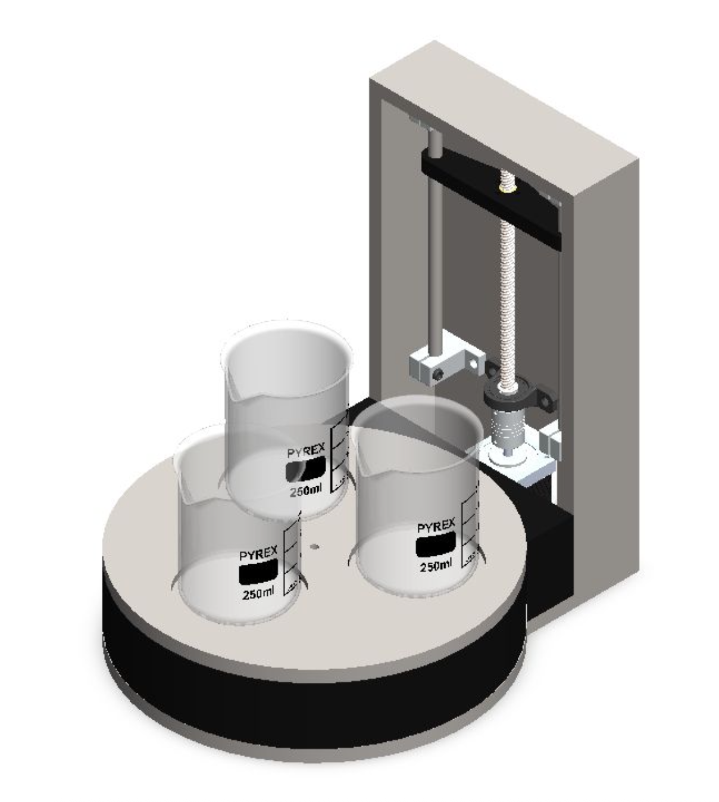
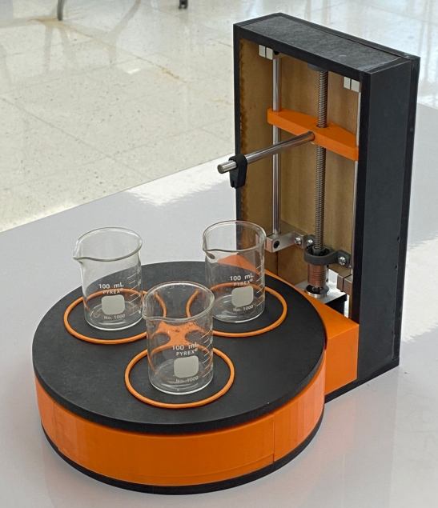
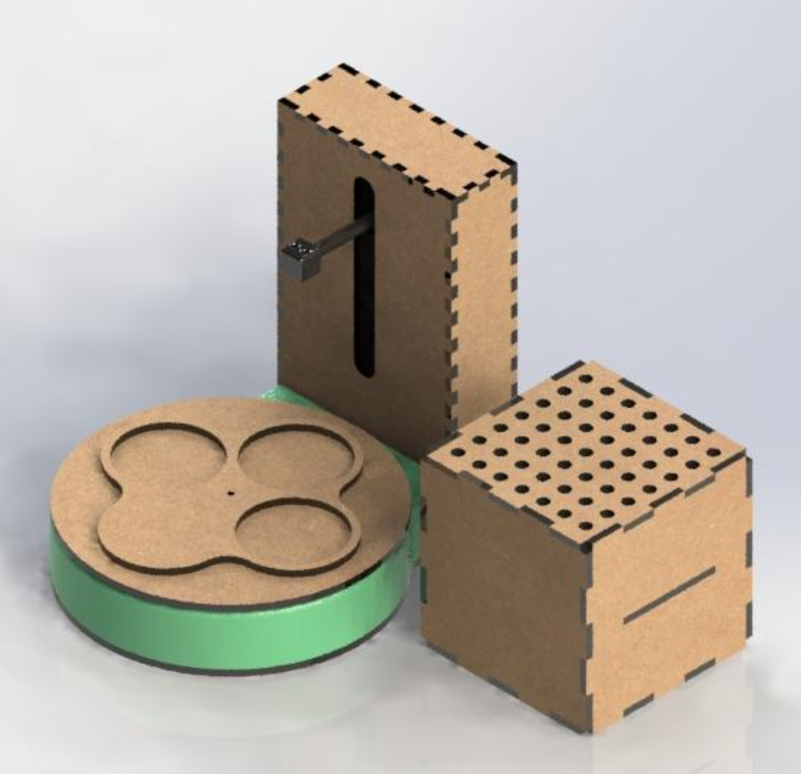
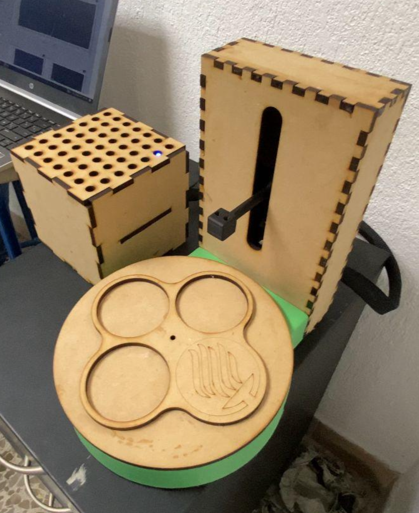
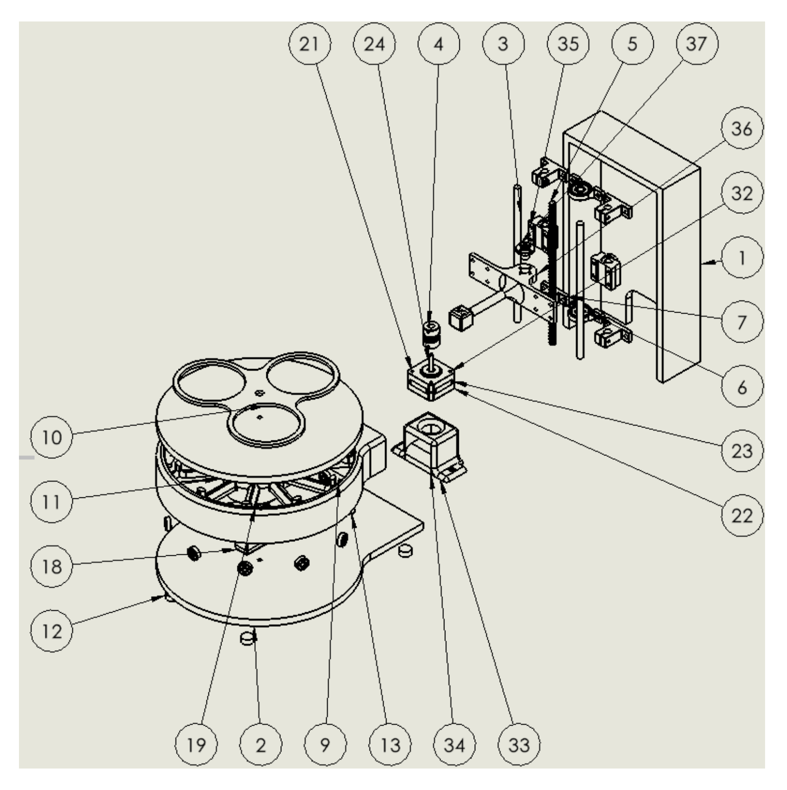
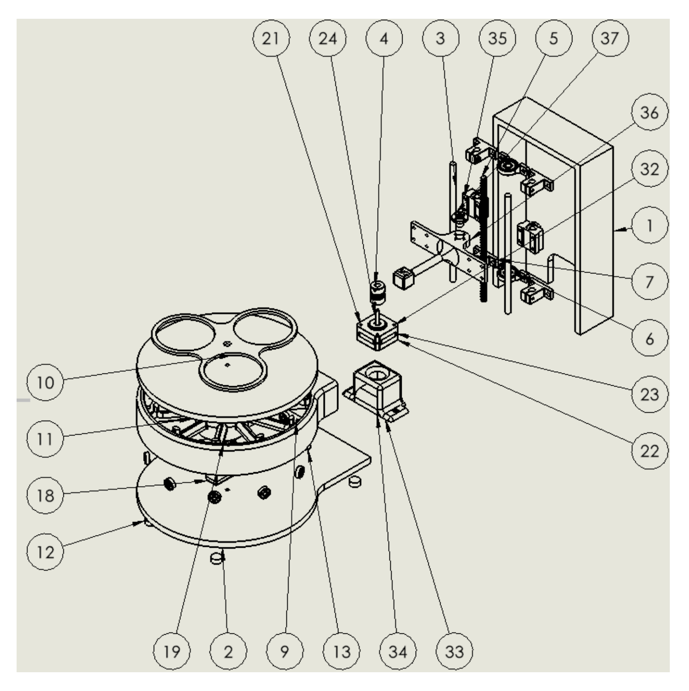
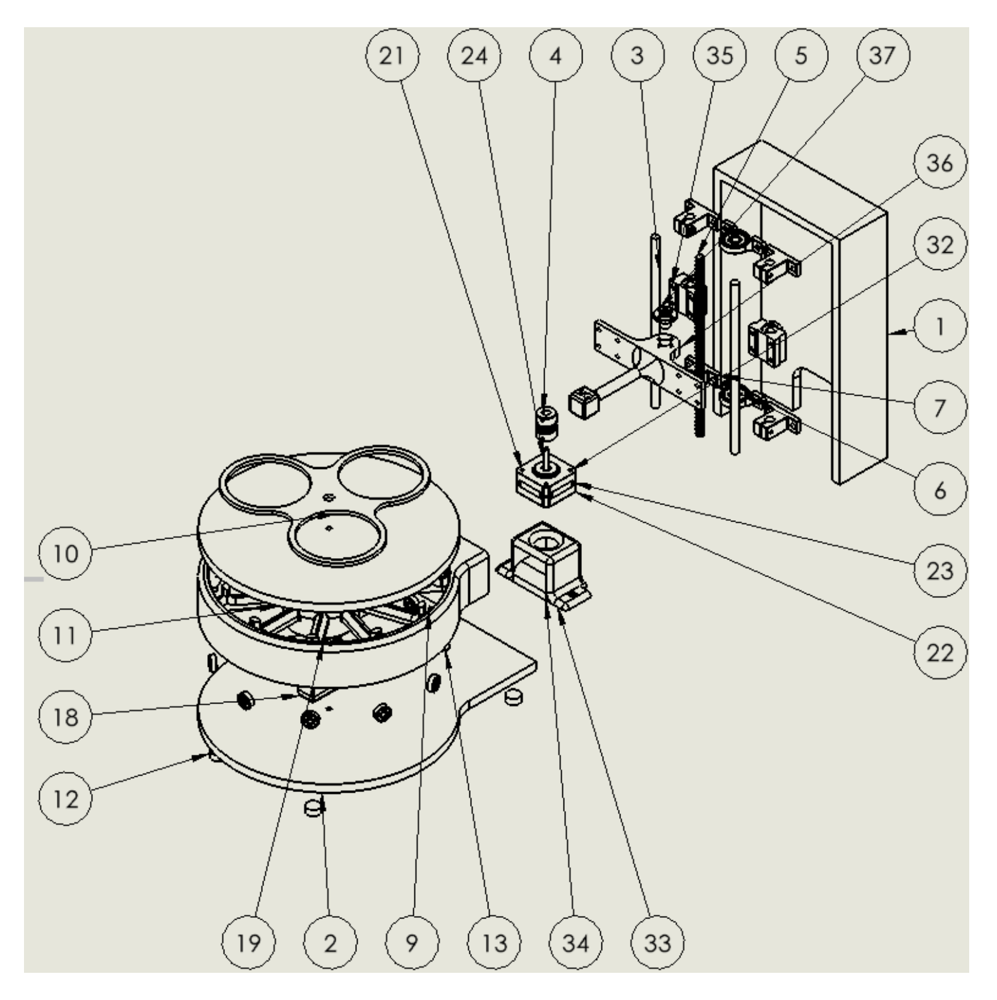

Dip Coating Research Machine Prototype
Mechanical Designer & Fabricator
Designed and prototyped a custom dip coating machine to explore DFMA principles in academic environments. Two versions were fabricated—one assembled with adhesive and another using only mechanical joints—to assess manufacturability and repeatability.
The machine features a stepper-motor-driven Z-axis, programmable dipping cycles, and adjustable depth and timing. The structure was built entirely using 3D-printed components and laser-cut MDF panels for cost-effective and rapid prototyping.




 

